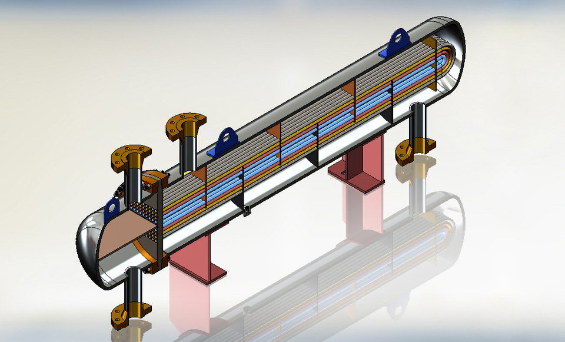
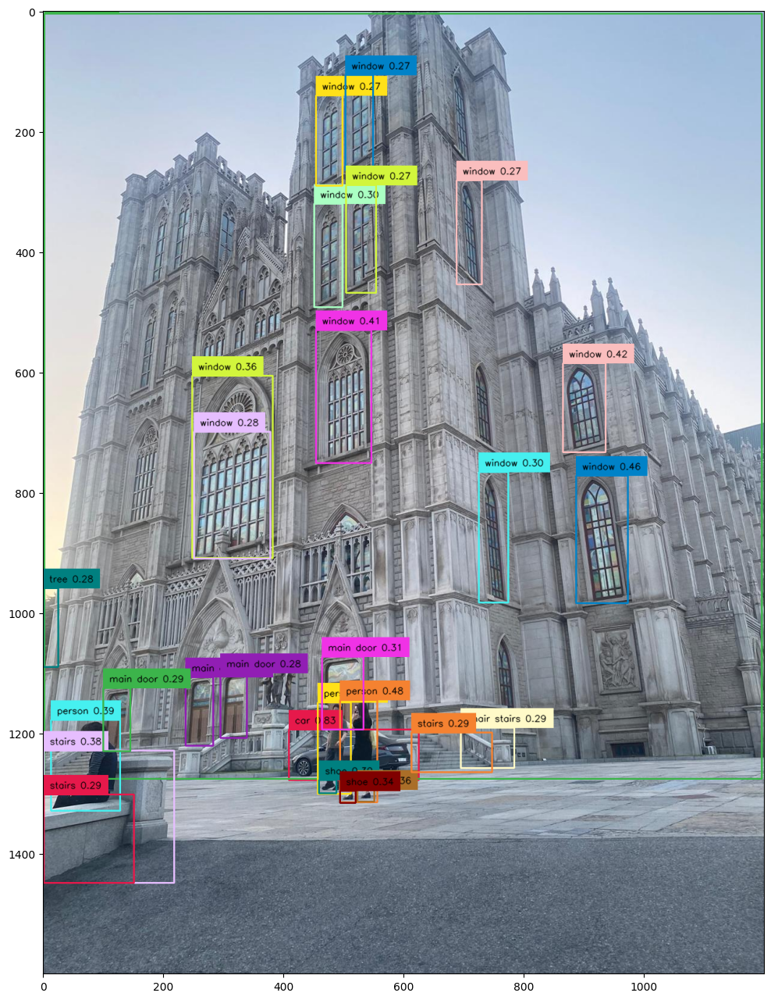
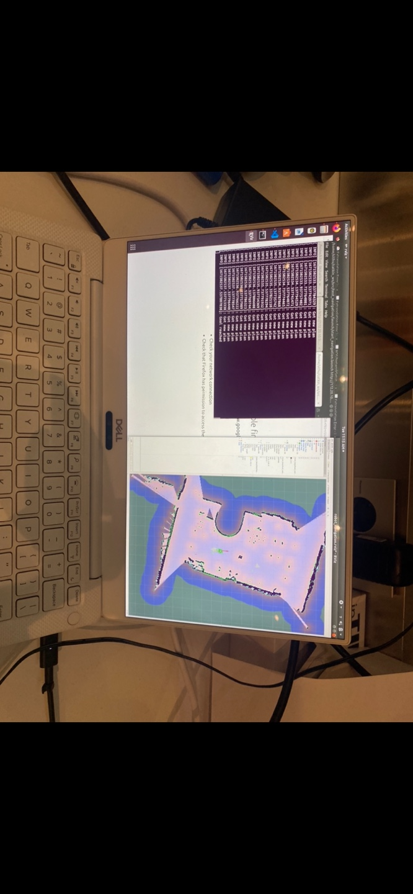
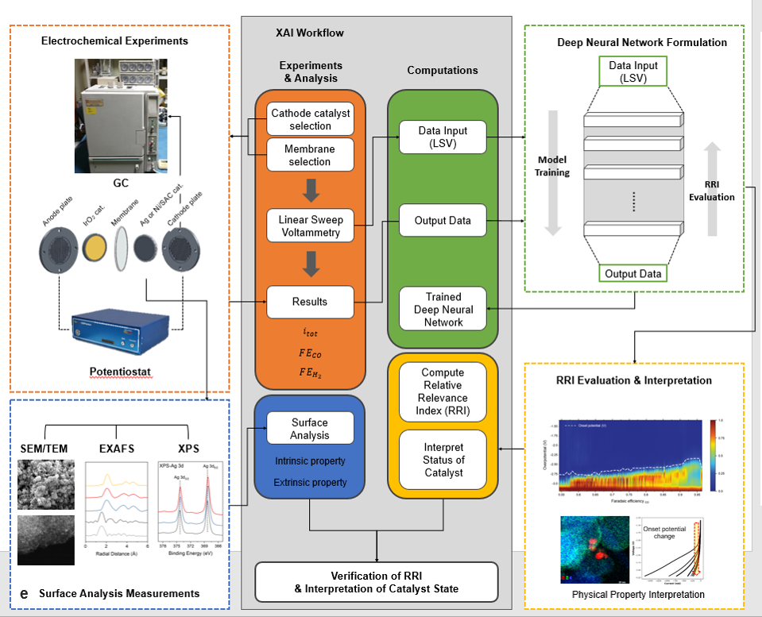

About Me
Hello, I’m Hakan Karasu, a PhD student in Production Technology at University West in Sweden. My current work focuses on thermal monitoring in wire-arc additive manufacturing (WAAM), sensor calibration, and machine learning close to the manufacturing process. My earlier work at KIST included interpretable deep learning for electrochemical systems and mobile robotics with ROS.
CONTACT ME

Performance of Wood Chips

Calculating adiabatic flame temperature from combustion energy balances as part of a furnace-analysis project in Python.

A PyTorch implementation of ResNet-50 with and without attention, including feature-map visualisation.
Mobile Robot Class Project

A Robot Operating System (ROS) class project at KIST exploring omnidirectional mobile-robot movement.
Machine Learning for Temperature Prediction

Predicting thermocouple temperatures from pyrometer data, with data preparation, model comparison, and visualisation.